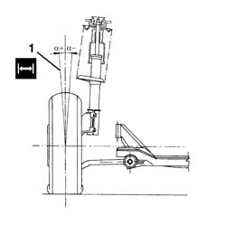
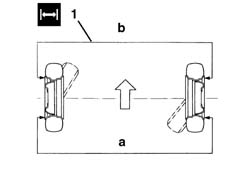
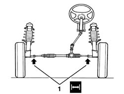

4450A10 FRONT WHEEL GEOMETRY - CHECK USING OPTICAL EQUIPMENT - INCLUDES FRONT WHEEL TOW-IN ADJUSTMENT IF NECESSARY
- Path
- Procedures > 44 SUSPENSION AND WHEELS > 4450 WHEELS AND HUBS > 4450A WHEEL GEOMETRY > 4450A10 FRONT WHEEL GEOMETRY - CHECK USING OPTICAL EQUIPMENT - INCLUDES FRONT WHEEL TOW-IN ADJUSTMENT IF NECESSARY
- Kind
- repair procedure (removal / refitting; the operation number is the code)
- Applies to
- all engines; all production periods
- Interactive page
- https://sloeber94.github.io/elrnDB-fDct/en/#/244001201
Applies to: all engines; all production periods
- Before checking the wheel geometry, the following checks must be carried out.
- Tyre inflation pressure.
- Eccentricity and orthogonality of the wheel rims which should not be more than 3 mm.
- Wheel bearing endfloat.
- Clearance between the steering knuckle and track control arm joint pin.
- Steering track rod end.
- Let the suspension bed in driving the vehicle over an uneve section of road.
- Have the vehicle ready unladen, complete with spare wheel, tools, accessories and a full fuel tank.
1. Check the wheel camber angle "%agr".
 | Subject | Value |
|---|---|---|
1 | Front wheel camber | - |
- | Camber angle "%agr" | 0° ± 30' |
- The camber angle cannot be adjusted.

Applies to: all engines; all production periods
1. Measure the distances "a" and "b" between the outer points of the wheel rim on the front axle and measure the front wheel toe in.
| Subject | Value |
|---|---|---|
1 | Front wheel toe in | mm |
- | Distance a - b | 0 ± 1 |

Applies to: all engines; all production periods
1. If the toe in figure measured is different from the recommended value, work symmetrically on the steering rods, after having loosened the fixing nuts and observing the following warnings.

Topics that link to this page (5)
- 4130B42 RETURN PIPE FROM POWER STEERING CASE TO POWER STEERING FLUID RESEVIOR R R
- 4410A12 FRONT SUSPENSION DAMPER (ONE), LH OR RH - FOR MCPHERSON STRUT SYSTEM - INCLUDES DISMANTLING/RE-BUILDING OF ASSEMBLY AT BENCH R R
- 4410B44 FRONT SUSPENSION LOWER TRACK CONTROL ARM - R.R.
- 4410D14 FRONT SUSPENSION CROSSBEAM - R+R WITH WISHBONES REMOVED
- 4450A20 FRONT WHEEL CASTER